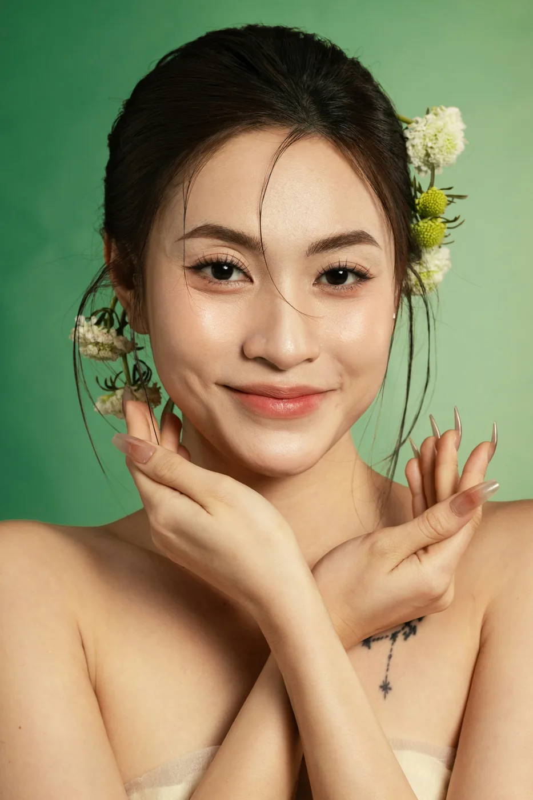
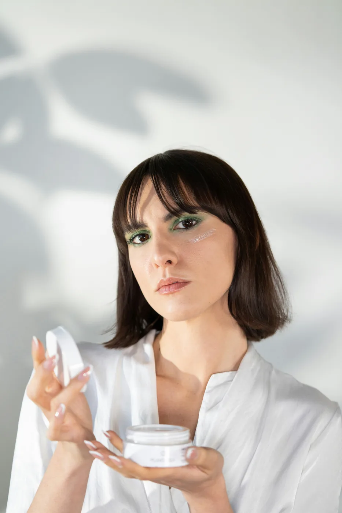
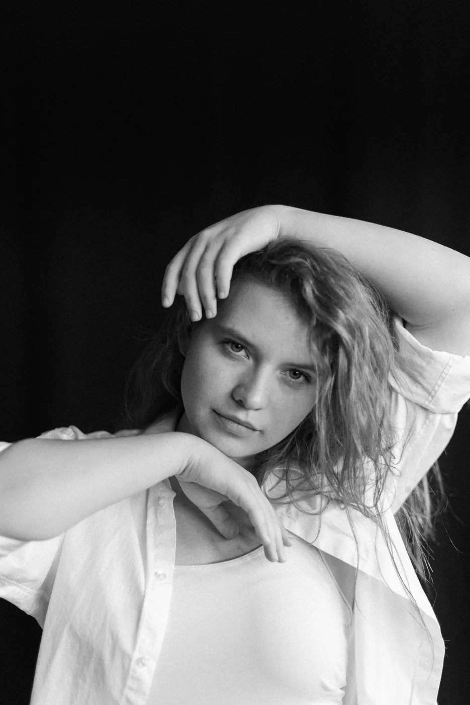

Mara Ionescu
Construcții cu gel, forme almond și designuri grafice discrete.
Fiecare specialistă are propriul ritm și propriile zone de interes, dar aceeași atenție pentru pregătire, proporții și finisaj.

Construcții cu gel, forme almond și designuri grafice discrete.

Manichiură naturală, finisaje clean și palete cromatice neutre.

Pedichiură estetică, îngrijire și servicii spa pentru confort complet.
Lucrăm cu programări dedicate, alegem tehnica în funcție de unghia naturală și păstrăm un proces coerent de la pregătire până la recomandările de întreținere.
Timp rezervat pentru consultație, execuție și finisaj.
Nu reproducem mecanic o fotografie; o ajustăm proporțiilor tale.
Primești recomandări simple pentru rezistență și aspect îngrijit.
O poți menționa direct în formularul de programare.